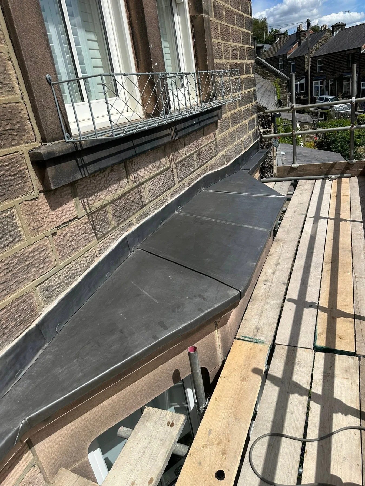

CHESTERFIELD · DERBYSHIRE ROOFING
Your home covered.
Your roof, done right.
From roof repairs to new roofs, KR Roofing brings a straightforward approach to slate, tile and leadwork across Derbyshire.
RELIABLE ROOFING. STRAIGHTFORWARD SERVICE.
Good work starts
with getting it right.
A damaged roof needs a clear plan. A new roof deserves careful attention from the first batten to the final ridge.
Based in Derbyshire, KR Roofing offers roofing services from repairs to new roofs. Explore the team’s own photographs of slate roofing, tiled extensions and leadwork.
Tell us about your roof →

SLATE ROOFING · THE WORK IN DETAIL
From the structure
to the finishing touches.
Battens, slates, roof windows and leadwork all have a part to play. These project views show the work across the roof, including the ridge and chimney junctions.
Explore slate & tile roofing →KR ROOFING PROJECTS
Up close.
Every detail counts.
Roofing and leadwork from the KR Roofing portfolio. Tap any image to see the complete photograph.
LEADWORK & ROOF JUNCTIONS
Small details.
An important job.
The points where roofs meet walls need particular care. KR Roofing’s photographs show leadwork at a bay roof, along a slate roof junction and around wall details.
Take a closer look at leadwork →CUSTOMER RECOMMENDATIONS
100% recommendBased on 5 Facebook reviews.

KR ROOFING · DERBYSHIRE
Simple, reliable
roofing services.
KR Roofing is based in Derbyshire and provides roofing work from repairs to new roofs, with a focus on fair prices and quality work.
Describe the issue or the work you are planning, then discuss the next step.
Slate, tile and leadwork, including the junctions and edges around the roof.
Serving Chesterfield, Matlock, Alfreton and Belper.
WHERE WE WORK
Roofing across Derbyshire.
Based in Chesterfield and working across the surrounding area. Send your postcode to discuss your project.
PLANNING YOUR ROOFING WORK
A few useful answers.
Can I ask about a repair or a new roof?
Yes. KR Roofing offers services from repairs to new roofs. Choose the closest option in the quote form and tell us what you need.
What information helps with an enquiry?
Your postcode, the type of roof, the issue you have noticed and any relevant photographs taken safely from ground level. Mention access restrictions or an extension roof.
Which areas do you cover?
The business lists Chesterfield, Matlock, Alfreton and Belper. Send your postcode to confirm availability for your property.
How do I send photographs?
Use the WhatsApp button or quote form, then add your photographs in WhatsApp before sending the message.
REQUEST A QUOTE
Let’s talk
about your roof.
Tell KR Roofing about the work, your location and any signs of a problem. The form opens WhatsApp with your chosen service and details ready to review and send.
For a direct conversation, call 07423 584041.
KR ROOFING · ROOF RIGHT
A better roof
starts with a conversation.
Roof repairs and new roofs across Derbyshire.